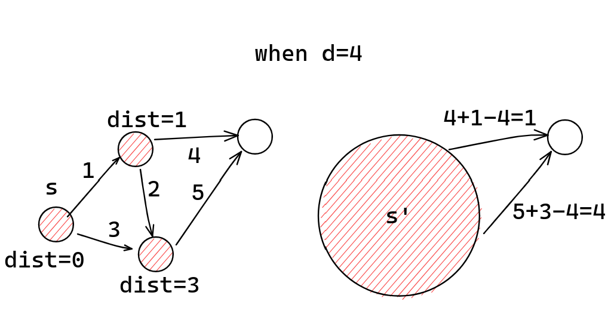

基于 Goldberg 算法的 SSSP 并行算法
黄文睿
221180115 计算机拔尖班
概述
本次 OT 先介绍一种可以处理非负权图的 $L$-限定距离 SSSP的并行算法，work 为 $\tilde O (m)$，span 为 $n^{1/2+o(1)}L^{1/2}$ WHP。
$L$-限定距离 SSSP: 只计算途中 $dist(s, v)\le L$ 的 $v$ 的最短距离 $v.d=dist(s, v)$，而将 $dist(s, v)>L$ 的 $v$ 求得的 $v.d=\infty$。
WHP: With high probability，有 neglible 的概率失败。
然后在此基础上再介绍基于 Goldberg's algorithm 的整数权的 SSSP 并行算法。设图中所有权的边权均 $\ge -L$，则 work 为 $\tilde O(m\sqrt n\log N)$，span 为 $n^{5/4+o(1)}$ WHP。[1]
$L$-限定距离 SSSP
两个黑盒结果
-
“单（多）点连通性判断问题”：给定图 $G=\langle V, E\rangle$ 和起点集合 $S\subseteq V$，判定图中哪些点可以从 $S$ 中某个点可达。
在该文[2]中给出了 $\tilde O(m)$ work 和 $n^{1/2+o(1)}$ span WHP 的结果。
-
“逼近 SSSP 问题（ASSSP）”：给定图 $G=\langle V, E\rangle$ 和起点 $s$，要求求得“过估距离” $d'(v)$ 满足 $dist(s, v)\le d'(v)\le (1+\epsilon)dist(s, v)$。
对于固定的 $\epsilon$，该文[3]给出了 $\tilde O(m)$ work 和 $n^{1/2+o(1)}$ span WHP 的结果。
$L$-限定距离 SSSP 主过程
设 $D$ 是大于 $L$ 的最小的 $2$ 的幂次。该算法先运行一次 ASSSP with $\epsilon=1$。对于 $d'(v)\ge 2D$ 可知 $dist(v) \ge D>L$，这些点一定不用在 $L$-限定距离 SSSP 中考虑，直接设为 $v.d=\infty$。剩下的点的 $dist(v)$ 一定落在 $[0, D)$ 区间。对于 $d'(v)=0$ 的，可知 $dist(v)=0$。
该算法正是依赖于“逐渐减小范围”的方法来求出 $dist(s, \cdot)=d$ 的所有顶点：假设已经找到了 $dist(s, \cdot)<d$ 的所有顶点，并不再考虑。那么，剩下的顶点可以另构图，使得整体的 $dist'(s', \cdot)$ 都减小 $d$：对于图中所有的边 $(u, v)$ 满足 $dist(s, u)<d$，$dist(s, v)\ge d$，相应地建边 $(s', v)$ 且
$$ w'(s', v)=w(s, v)+dist(s, u)-d. $$
图示

伪代码

范围收缩
假设当前考虑 $v$ 的 $dist(s, v)$ 范围是 $[d, d+2^i)$，则在作这个变换后，可以知道对于这些 $v$ 有 $dist'(s', v)\in [0, 2^i)$。使用 $\epsilon<1/4$ 的 ASSSP 后，可以根据得到的 $d'$ 分为三类（注意上界为 $5/4\cdot 2^i$）：
- $0\le d'<2\cdot 2^{i-2}$，则 $0\le dist'(s', v)<2\cdot 2^{i-2}$，进而 $d\le dist(s, v)< d+2\cdot 2^{i-2}$。
- $2\cdot 2^{i-2}\le d'<3\cdot 2^{i-2}$，则 $2^{i-2}\le dist'(s', v)< 3\cdot 2^{i-2}$，进而 $d+2^{i-2}\le dist(u, v)<d+3\cdot 2^{i-2}$。
- $3\cdot 2^{i-2}\le d'<5\cdot2^{i-2}$，则 $2\cdot 2^{i-2}\le dist'(s, v)<4\cdot 2^{i-2}$，进而 $d+2\cdot 2^{i-2}\le dist(u, v)<d+4\cdot 2^{i-2}$。
于是划分成了 $2^{i-1}$ 长度的三小段。在 $\log L$ 次后即可计算完成 $dist(s, v)=d$ 的顶点。
算法分析
简要分析可知，该算法做到了 $\tilde O(m)$ work 和 $n^{1/2+o(1)}L$ span WHP。在加上一定的随机赋优先级后，有着期望 $\tilde O(m)$ work 和 $n^{1/2+o(1)}\sqrt L$ span WHP。
基于 Goldberg 算法的 SSSP
基于 Goldberg 算法的 SSSP
Goldberg 可以解决的问题：解决整数权（可以有负权）的 SSSP 问题。设图中所有边权 $\ge -N$，则 Goldberg 算法的时间复杂度为 $O(m\sqrt n\log N)$。
该文[1]对其并行化后，得到了 $\tilde O(m\sqrt n\log N)$ work，$n^{5/4+o(1)}$ span WHP 算法，并行率至少为 $m^{1/4-o(1)}$。
Goldberg 简述
Goldberg 的核心思想是构造一个“价值函数” $p$ 满足
$$ \forall (u, v)\in E, p(v)\le p(u)+w(u, v). $$
构造新图 $G'=\langle V, E, w'\rangle$，在 $G'$ 中
$$ \forall (u, v)\in E, w'(u, v)=w(u, v)+p(u)-p(v). $$
可知 $w'(u, v)\ge 0$。
而对于原图中的一条路径 $p=\langle e_1, e_2, \cdots, e_m\rangle$，可知
$$ \begin{aligned} w'(p)&=\sum_{i=1}^{m-1}w'(e_i) \ &=\sum_{i=1}^{m-1}[w(e_i)+p(u_i)-p(v_i)] \ &=w(p)+p(s)-p(t). \end{aligned} $$ 其中 $s, t$ 分别是 $p$ 的起点和终点。故 $G'$ 中 $s,v$ 最短路对应于 $G$ 中的最短路。由于 $G'$ 是非负权图，故可以使用 Dijkstra 算法求解。
求出价值 $p$
问题转化为了求出满足条件 $p$。Goldberg 算法对图中的最小边权做递推。最终要求的是满足 $\forall (u, v), w(u, v)> -N$ 的 $p$，记作 $p_{N}(G)$。方便起见，设 $N$ 是 $2$ 的幂次。递归方案如下：
- 对任意图，$p_1(G)$ 是好构造的：此时 $w(u, v)>-1$ 即非负，取 $p\equiv 0$ 即满足条件。
- 若要求符合条件的 $p_{2m}(G)$，
- 若 $w$ 全为偶数，则构造新图 $G'=\langle V, E, w/2\rangle$，在 $G'$ 中得到 $p_{m}(G')$，则可令 $p_{2m}(G)=2p_m(G')$。
- 若 $w$ 并非全为偶数，构造新图 $G'=\langle V, E, \lceil w/2\rfloor\rceil$，在 $G'$ 中得到 $p_m(G')$，令 $p_{2m}(G)=2p_m(G')$，此时仍有一些边不满足条件：它们比预期差了 $1$。于是，会得到一个边权 $\ge -1$ 的图。
下面只需要对该边权 $\ge -1$ 的图 $G_p$ 调整 $p$ 的值即可。
调整 $\ge -1$ 权图的价值 $p$
先求 $G_p$ 的强连通分量并缩点，得到一个 DAG $G'_p$。若某个 SCC 中含有负边，则图中显然存在负环。记 $G'_p$ 中有入边为 $-1$ 的点称为“负点”，其集合记为 $V_n$，可以按以下方法逐渐缩小 $V_n$ 最终致其为空集：
取 $x\in V_n$，记 $x$ 可达的所有点为 $S_x$，将 $S_x$ 的所有点 $p$ 值降低 $1$。这样以后 $x$ 就不再是负点了。
由于每次都需要重新求 SCC，时间复杂度为 $O(mn\log N)$。
优化时间复杂度
注意到最长反链长等于最小链覆盖：DAG 中最长链和最长反链至少有一个超过 $O(\sqrt k)$，其中 $k$ 是 $V_n$ 的大小。如果我们提出一个一次性消除链的算法，一个一次性消除反链的算法，就可以解决了。
- 一次性消除反链：直接求出反链上的所有点可达的点，一起让 $p$ 值减 $1$ 即可。
- 一次性消除链：较为复杂，但也可以线性得到，略。
寻找最长链/最长反链是容易的：构造超级源点 $s$ 并运行一次 DAG 上的 SSSP(时间 $O(m)$)，设距离为 $-d$ 的点集为 $V_d$，得到 $V_0, V_1, \cdots, V_\tau$。若 $\tau\ge \sqrt k$，则找到了一条长度 $\ge \sqrt k$ 的链；否则由鸽巢原理，必然存在 $|V_i|\ge \sqrt k$，这是一条反链。
于是，每次都会使得问题规模 $k'\gets (1-\frac{1}{\sqrt k})\cdot k$，可以知道在 $O(\sqrt k)$ 轮后 $V_n$ 变为空集，每轮复杂度 $O(m)$，一共要进行 $O(\log N)$ 次递推。最后还需进行一次 $O(n\log m)$ 的 Dijkstra。Goldberg 算法复杂度故为 $O(m\sqrt n\log N)$。
Goldberg 算法的并行化
外面的 $O(\log N)$ 次递推，以及中间的 $\sqrt n$ 次 $V_d$ 迭代仍然保持顺序执行，如此，若内部的每次迭代可以做到 span $f$ WHP，并保持 work $\tilde O(m)$，则最后可以得到 $\tilde O(m\sqrt n\log N)$ work 和 $f\cdot n^{1/2}\log N$ span WHP 的算法。在此处，我们使用得到 $f=n^{3/4+o(1)}$ WHP 的算法。只需要注意到
- 求 SCC 可以归约到单点连通性[4]，进而用“单（多）点连通性判断问题”在 $\tilde O(m)$ work 和 $n^{1/2}+o(1)$ span WHP 内完成。
- 寻找最长链/最长反链运行的 SSSP 需要运行带负权边 $-1$ 的 DAG $\sqrt k$-限定距离 SSSP，在原文中给出了一个 $\tilde O(m)$ work，$n^{1/2+o(1)}\sqrt L$ WHP 的算法（在此略去），取 $L=\sqrt k$ 满足条件。
- 一次性消除反链：对于给定的反链需要求出可达点，这也就是"单（多）连通性判断问题"，同 1.
- 一次性消除链：使用一个 $\sqrt n$-限定距离 SSSP，用了前一个算法，$\tilde O(m)$ work，$n^{1/2+o(1)}\sqrt L$ WHP，符合条件。
总结
综上，最终我们得到了一个 $O(m\sqrt n\log N)$ work，$n^{5/4+o(1)}\log N$ span 的基于 Goldberg 算法的并行算法。
参考文献
[1] Cao, N., Fineman, J. T., & Russell, K. (2022, July). Parallel Shortest Paths with Negative Edge Weights. In Proceedings of the 34th ACM Symposium on Parallelism in Algorithms and Architectures (pp. 177-190).
[2] Jambulapati, A., Liu, Y. P., & Sidford, A. (2019, November). Parallel reachability in almost linear work and square root depth. In 2019 IEEE 60th Annual Symposium on Foundations of Computer Science (FOCS) (pp. 1664-1686). IEEE.
[3] Cao, N., Fineman, J. T., & Russell, K. (2020, June). Efficient construction of directed hopsets and parallel approximate shortest paths. In Proceedings of the 52nd Annual ACM SIGACT Symposium on Theory of Computing (pp. 336-349).
[4] Blelloch, G. E., Gu, Y., Shun, J., & Sun, Y. (2020). Parallelism in randomized incremental algorithms. Journal of the ACM (JACM), 67(5), 1-27.